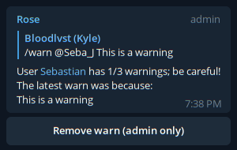

Warnings
Sometimes, a user does something that breaks the rules, or is downright annoying. But most of us like to give users a few chances to get familiar with the rules of our group chats and the expected behaviour. With warnings, Rose gives you a quick and easy way to warn your users and let them know how close they are to getting the boot!
Setting Up Warnings
Before you start warning users, you should probably take a moment to configure how you want warnings to work within your group chat. We'll go over a few options below.
View Current Warning Configuration
If you ever want to know how warnings are configured in your group, simply issue the below command:
/warnings
Setting The Warn Limit
If you want to change the warning limit in your group, you can do this by issuing the following command:
/setwarnlimit <number>
Example Scenario
Let's say you wanted to a user to be able to accumulate 5 warning before Rose punishes the user. You would do this by issuing the below command:
/setwarnlimit 5
Setting The Warn Mode
Warnings are only useful if there is actually a punishment for meeting the warn limit, so you'll want to configure that as well. To set what type of punishment Rose will issue you have three options which we'll discuss below.
Kick User
In this mode, Rose will kick any user who meets the configured warn limit. To set this mode, issue the below command:
/setwarnmode kick
Mute User
In this mode, Rose will mute users who meet the warn limit. If you want to set this mode, issue the following command:
/setwarnmode mute
Ban User
In this mode, users who meet the warn limit will be banned from your group. To set this mode, issue the below command:
/setwarnmode ban
Adding Warns To A User
To add a warn to a user, issue the following command:
/warn <@username or UserID> <reason>
You may also warn a user by simply replying to their message and issuing the warn command without any arguments, as shown below:
/warn <reason>
Rose will then reply to the command advising how many warnings the user now has, along with the reason you provided for the warning.
Example Scenario 1
You have a user with the username @JohnSmith in your chat, and they keep spamming the chat with useless messages. To warn them with the reason “Stop spamming our chat”, you would issue the below command:
/warn @JohnSmith Stop spamming our chat
You could also simply reply to one of the user's messages with the following command:
/warn Stop spamming our chat
Removing Warns From A User
To remove a warn from a user, there are two options:
Remove Warns Via Command
In this method, you can issue a command which will remove the most recent warning from a user. To do this, issue the below command:
/rmwarn <@username or UserID>
You may also remove a warn from a user by replying to any of their messages with the following command:
/rmwarn
Remove Warns Via Button
This method allows you to simply click a button to remove the warn. When you warn a user, Rose will reply with a message containing a button as shown below:

Simply click the “Remove warn” button, and the warning will be removed from the user.
Removing All Warns
If you want to remove every warn from a user and allow them to start back at zero, issue the below command:
/resetwarn <@username or UserID>
You may also do this by replying to any of the user's messages with the following command:
/resetwarn
Viewing A User's Warns
At any time, you may view the warns currently associated to a user. This is useful if you want to see if they're a repeat offender for a certain infraction, or how close they are to the warn limit. To do this, issue the below command:
/warns <@username of UserID>
You may also view the user's warns by replying to any of their messages with the below command:
/warns
Rose will reply with a message displaying the user's warns, along with the reasons for the warns if specified.